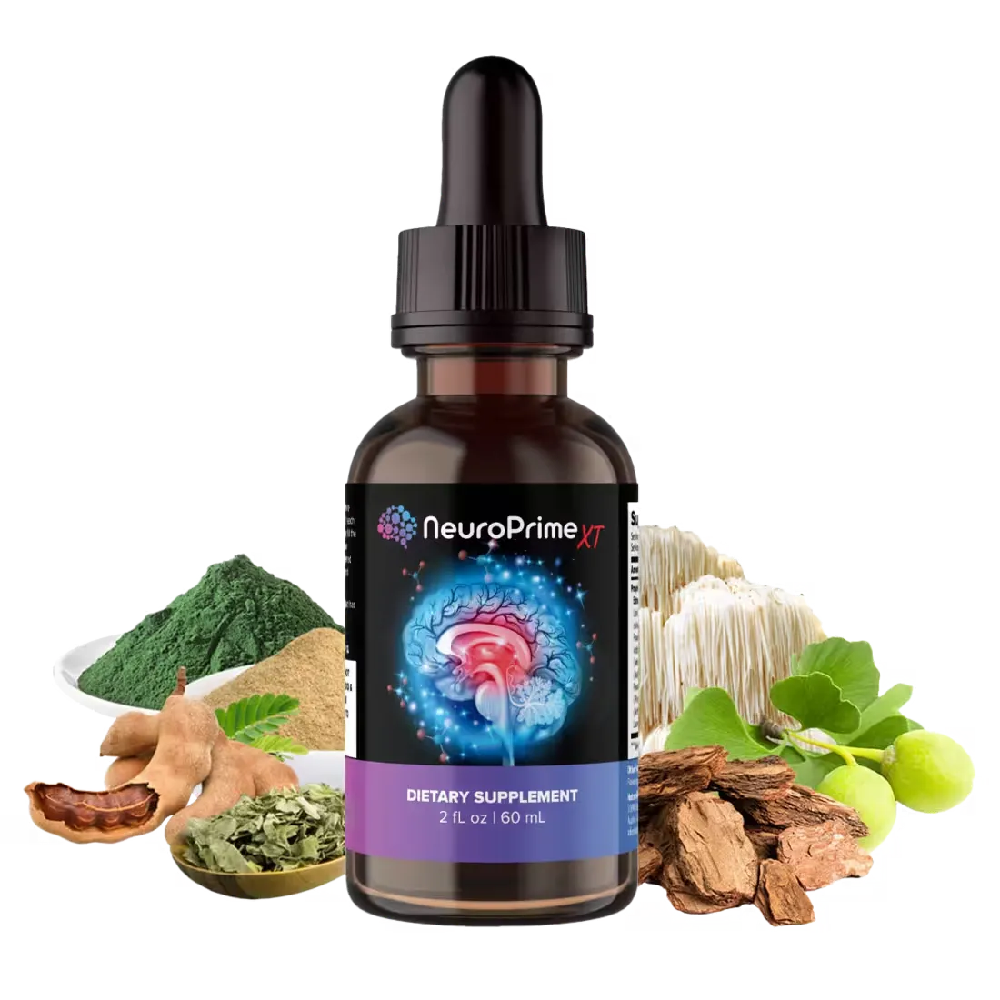
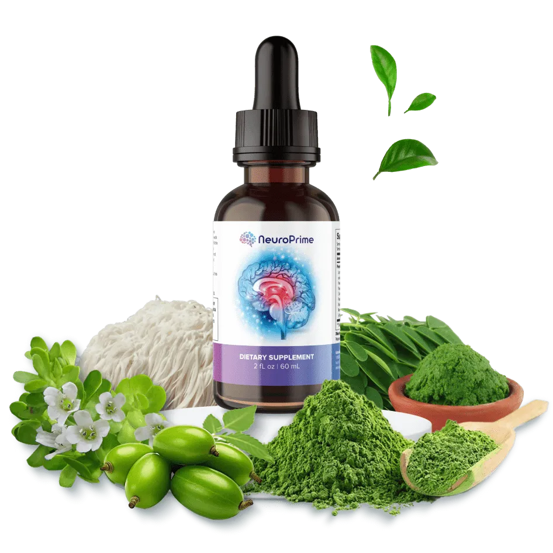

NeuroPrime is a stimulant-free nootropic created to support focus, memory, mental clarity, and everyday cognitive performance. It’s designed for people who want to feel more focused and mentally sharp without relying on stimulants. With its simple approach to daily brain support, NeuroPrime fits easily into a regular wellness routine.
NeuroPrime is proudly made in the USA, with careful attention to quality, consistency, and high manufacturing standards in every batch.
Every NeuroPrime ingredient is carefully selected from quality sources, with a focus on purity, consistency, and reliable potency.
NeuroPrime is produced in accordance with Good Manufacturing Practices (GMP), with quality controls designed to support consistency, purity, and reliability in every batch.
NeuroPrime is manufactured in facilities that follow established FDA requirements and quality standards, with careful processes designed to ensure consistency and quality in every capsule.

NeuroPrime is a nootropic supplement designed to support focus, memory, mental clarity, and everyday brain health. With busy schedules and constant distractions, it’s easy to feel mentally tired, lose focus, or struggle to remember things. NeuroPrime is formulated to provide daily cognitive support and help you stay sharp and focused.
Unlike many traditional brain supplements that rely heavily on caffeine or other stimulants, NeuroPrime takes a more balanced approach. Its formula combines vitamins, plant-based ingredients, and other nutrients selected to support normal brain function, mental performance, and overall cognitive wellness.
"I’ve been really happy with NeuroPrime. I feel more focused during the day, and staying on top of work feels easier. Ordering was straightforward, and the whole process was smooth from start to finish. Definitely a product I’m glad I tried.”
"I’ve had a really positive experience with NeuroPrime. I feel more focused and mentally clear throughout the day, and I’ve noticed a difference in how easily I stay on top of things. My order arrived quickly, and the overall experience was smooth. It’s definitely something I’m happy to keep using.”
"Since I started using NeuroPrime, I’ve felt more clear-headed and focused throughout the day. I’ve really enjoyed the experience so far, and ordering was simple and hassle-free. Overall, I’m very happy with my purchase and the way NeuroPrime fits into my daily routine.”
NeuroPrime comes with a 365-day money-back guarantee, giving you plenty of time to try the product with confidence. If you’re not completely satisfied with your purchase, simply contact the NeuroPrime support team within 365 days of your order. Once the product is returned, you can request a full refund in accordance with the guarantee terms.
NeuroPrime is a natural brain-support supplement formulated to support memory, focus, mental clarity, and everyday cognitive performance. Its blend of herbs, antioxidants, and essential nutrients is designed to provide comprehensive support for healthy brain function and long-term cognitive wellness.
NeuroPrime helps to nourish brain cells, enhancing the flow of blood to the brain and reducing stress caused by oxidative stress. Its ingredients aid in improving memory concentration and mental performance, while also supporting the overall health of the brain.
NeuroPrime is designed for adults who want to support memory, focus, mental clarity, and overall cognitive wellness. It can be a convenient addition to the daily routine of professionals, students, and anyone looking to stay mentally sharp and focused throughout the day.
Results may vary from person to person. Some users may notice changes in focus or mental clarity within a few weeks, while others may require more time. Consistent use as directed can help support the potential long-term benefits of NeuroPrime for memory, focus, and overall cognitive wellness.
NeuroPrime is formulated with plant-based ingredients that are generally well tolerated by many people. However, it’s always a good idea to speak with a qualified healthcare professional before starting any new supplement, especially if you have an existing medical condition or take medications.
Your online privacy is one thing you can be sure we so much prioritize here and thus do not worry about losing any sensitive credentials while making your purchase NeuroPrime supplement from us. Besides, you can excellent reputation and vast experience in online transactions to help you in safe guarding your purchase.
365-Day Money Back Guarantee by Nueroprime
According to the team of experts who created NeuroPrime the manufacturers have come up with an amazing refund policy. So, as you buy any of the above-mentioned packages, you will be provided with a great 365-day 100% money-back guarantee.